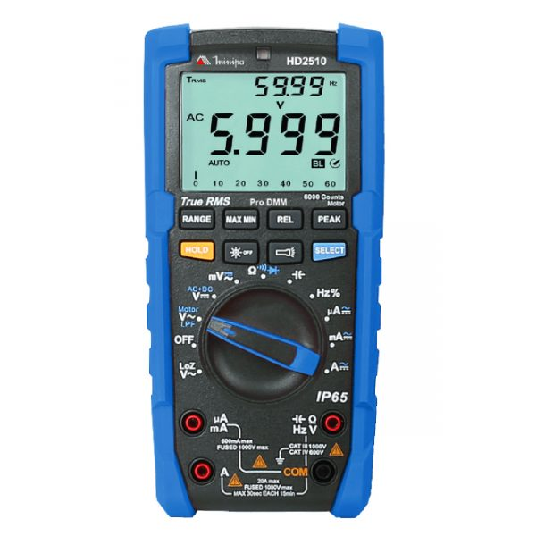
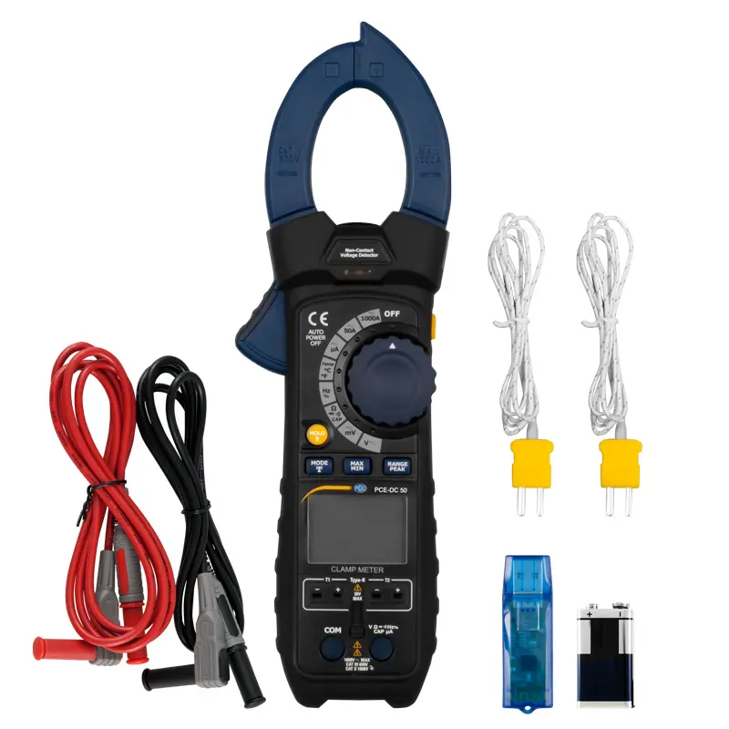
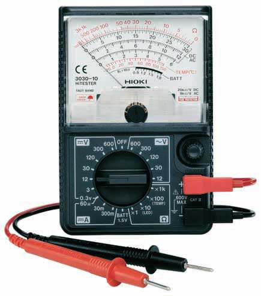
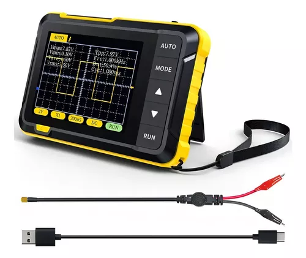
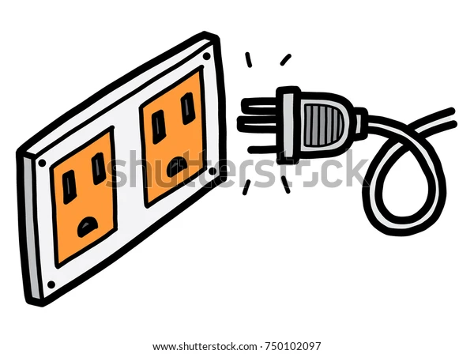
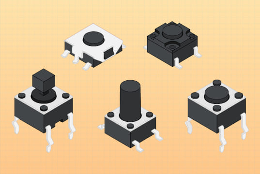
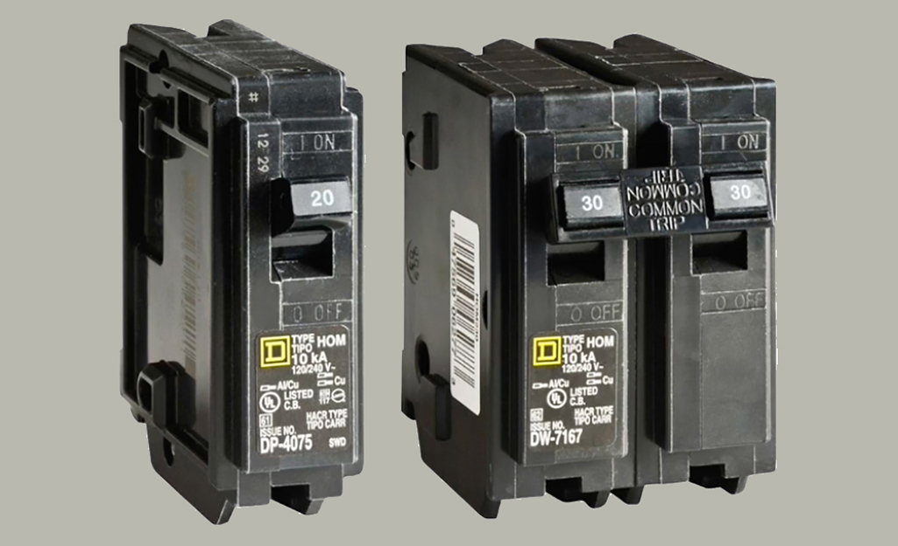
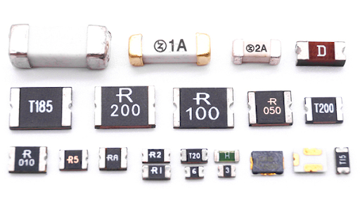

Electricidad Básica
- Conceptos básicos:
- Corriente eléctrica: Flujo de electrones a través de un conductor.
- Voltaje: Diferencia de potencial eléctrico entre dos puntos, medido en voltios (V).
- Amperaje: Intensidad de la corriente eléctrica, medida en amperios (A).
- Tensión: Sinónimo de voltaje, es la fuerza electromotriz que impulsa a los electrones.
- Potencia: Trabajo realizado por unidad de tiempo, medido en vatios (W).
- Alimentación AC: Corriente alterna, utilizada en la red eléctrica doméstica (110V, 220V).
- Alimentación DC: Corriente continua, utilizada en componentes electrónicos (3.3V, 5V, 12V).
- Polo a tierra: Conexión que deriva corrientes de fuga al suelo, proporcionando seguridad.
- Electricidad estática: Acumulación de cargas eléctricas en superficies aislantes.
- Instrumentos de medición:
- Multímetro: Dispositivo que mide voltaje, corriente, resistencia y continuidad. 
- Amperímetro: Mide la intensidad de corriente eléctrica. 
- Voltímetro: Mide la diferencia de potencial eléctrico. 
- Óhmetro: Mide la resistencia eléctrica.
- Osciloscopio: Muestra gráficamente las señales eléctricas variables en el tiempo. 

La ley de Ohm establece la relación fundamental entre voltaje (V), corriente (I) y resistencia (R): V = I × R
| Magnitud | Símbolo | Unidad | Equivalencia |
|---|---|---|---|
| Voltaje | V | Voltio (V) | 1 kV = 1000 V |
| Corriente | I | Amperio (A) | 1 mA = 0.001 A |
| Resistencia | R | Ohmio (Ω) | 1 kΩ = 1000 Ω |
| Potencia | P | Vatio (W) | P = V × I |
Normas de Seguridad para Equipos y Usuarios
- Alto voltaje:
- Nunca manipular equipos encendidos o conectados a la corriente.
- Utilizar herramientas con mango aislante.
- No tocar componentes internos de monitores CRT o fuentes de poder sin descarga previa.
- Verificar ausencia de tensión antes de manipular conexiones eléctricas.
- Conexión a tierra:
- Asegurar que todos los equipos estén conectados a tomas con conexión a tierra verificada.
- Comprobar la integridad de los cables de alimentación y sus conectores.
- No anular o modificar los pines de tierra en los enchufes.
- Separación de cables:
- Mantener separados los cables de señal (datos) de los cables de alimentación.
- Evitar crear bucles o enrollar excesivamente los cables de alimentación.
- Utilizar canaletas o organizadores para mantener el orden y separación.
- Descarga electrostática (ESD):
- Usar pulsera antiestática conectada a tierra al manipular componentes internos.
- Trabajar sobre alfombrillas antiestáticas.
- Mantener los componentes sensibles en bolsas antiestáticas hasta su instalación.
- Tocar una superficie metálica conectada a tierra antes de manipular componentes.
- Evitar ambientes excesivamente secos o con moquetas cuando se trabaja con componentes electrónicos.
Circuitos Eléctricos
- Conceptos básicos y características:
- Un circuito eléctrico es una ruta cerrada por donde fluye la corriente eléctrica.
- Requiere al menos una fuente de energía y un dispositivo receptor o carga.
- Debe formar un camino cerrado para que circule la corriente.
- Componentes:
- Tipos de cables: AWG (American Wire Gauge), coaxial, par trenzado, fibra óptica.
- Tomacorriente: Dispositivo que proporciona acceso al suministro eléctrico. 
- Interruptores: Controlan el paso de la corriente, abriendo o cerrando el circuito. 
- Caja térmica: Panel donde se concentran los circuitos eléctricos.
- Breakers: Dispositivos de protección que interrumpen el circuito en caso de sobrecarga. 
- Fusibles: Dispositivos de seguridad que se funden cuando la corriente excede un límite. 


- Tipos de circuitos:
- En serie: Los componentes están conectados uno tras otro, formando un único camino para la corriente.
- En paralelo: Los componentes están conectados en múltiples caminos, permitiendo que la corriente fluya por varias rutas.
- Mixtos: Combinación de circuitos en serie y paralelo.
- Detección, diagnóstico y reparación de daños:
- Fuentes de alimentación: Verificar voltajes de salida, condensadores hinchados, fusibles.
- Reguladores: Comprobar estabilidad de la tensión de salida.
- UPS: Verificar estado de baterías, capacidad de carga y respuesta ante cortes.
- Procedimiento general:
- Verificar alimentación eléctrica
- Comprobar conexiones
- Medir voltajes con multímetro
- Identificar componentes defectuosos
- Reemplazar o reparar según corresponda
- Probar funcionamiento
Precaución: Siempre desconectar los equipos de la red eléctrica antes de realizar cualquier reparación. En caso de no tener los conocimientos necesarios, recurrir a un técnico especializado.